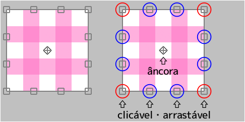
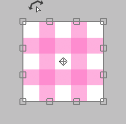
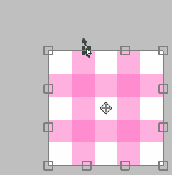

transformar

Se o cursor estiver dentro da área de transformação¶
Você pode movê-lo livremente clicando.

Você pode movê-lo apenas horizontalmente ou apenas verticalmente pressionando Shift + clique.

Se o cursor estiver fora da área de transformação¶
Você pode girá-lo clicando.

Você pode girá-lo em torno da âncora pressionando Ctrl + clique.

Se o cursor estiver na âncora¶
Você pode mover apenas a âncora clicando.

Se o cursor estiver na borda ( □ ) superior, inferior, esquerda ou direita¶
Você pode mover a borda clicando.

Você pode mover os dois lados ao mesmo tempo sem mover a posição central pressionando Alt + clicando.

Você pode mover a aresta livremente pressionando Ctrl + clicando.

Você pode mover a aresta ao longo de sua direção pressionando Ctrl + Shift + clicando.

Se o cursor estiver em 4 vértices ( □ )¶
Você pode mover o vértice clicando.

Você pode dimensioná-lo e girá-lo com Alt + clique.

Você pode escalá-lo uniformemente pressionando Shift + clicando.

Você pode dimensioná-lo uniformemente sem mover a posição central pressionando Shift + Alt + clicando.

Você pode mover apenas o vértice livremente pressionando Ctrl + clicando.
Nesse caso, a aparência muda de três maneiras.
Ctrl + clicando em "Transformar"¶

Ctrl + clicando em "Transformação de perspectiva" com "Perspectiva" desligado¶

Ctrl + clicando em "Transformação de perspectiva" com "Perspectiva" ativado¶

Você pode retornar ao estado anterior à transformação pressionando o botão "Reinicialização".
- Transformar(tamanho da tela)
- Mover Escala Rotacionar(tamanho da tela)
- Transformação de perspectiva
- Filtro dissolver
- Filtro retocar
Esses cinco métodos podem salvar o conteúdo da transformação.
Se salvo, você pode aplicar a mesma transformação a outra camada.
Se você deseja transformar especificando um valor numérico, use "Mover Escala Rotacionar".
Por exemplo, se você quiser dimensioná-lo para 50 % ou girá-lo em 45 graus.